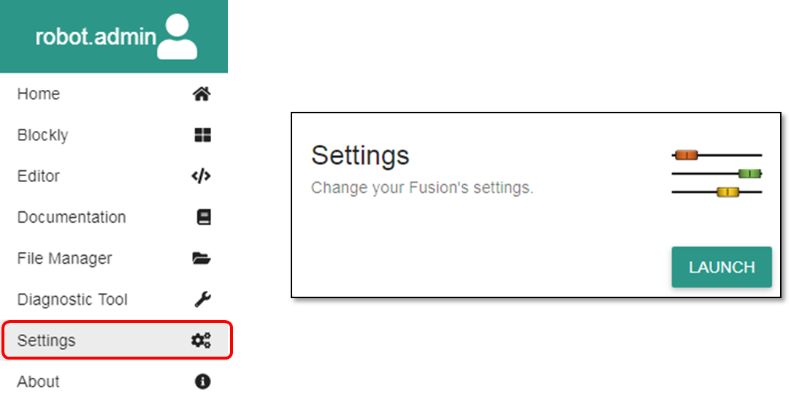

Change MyBot Access Point SSID and Passkey
Custom access point and passkey
Each MyBot has its own unique access point name, or Service Set Identifier (SSID), and share a common passkey. There is an option in the settings menu to change your SSID and passkey.
1. Open the MyBot settings from the hamburger menu on the left or the settings box on the home page. 
2. Navigate to the WIRELESS menu.
3. In the Access Point Settings section, enter in a new SSID and passkey into the corresponding text boxes.
Example:
SSID: HelloWorld
Passkey: mynewpassword4. Click the APPLY CHANGES button to apply the changes to your MyBot.
5. You will be prompted to accept the new Access Point credentials. Clicking OK will restart your MyBot.
6. The MyBot server will shutdown and you will need to reconnect with the new credentials that were created in Step 3 once the MyBot restarts. For instructions on connecting to the MyBot Access Point, refer to the following links.
Can't connect to new access point
If you changed your SSID and Passkey and are now unable to connect to your MyBot, a few things could have gone wrong.
1. Power off your MyBot and then turn it back on. Then attempt to connect to the MyBot using your credentials.
2. If that is still not working, you may have accidentally entered your password incorrectly or the caps lock on when you entered in the new password.
- Follow the instructions to Restore SSID and Passkey to default using the supplied System Recovery Wire.
{kind=link}
Questions?
Contact Boxlight Robotics at support@BoxlightRobotics.com with a detailed description of the steps you have taken and observations you have made.
Email Subject: Change MyBot Access Point